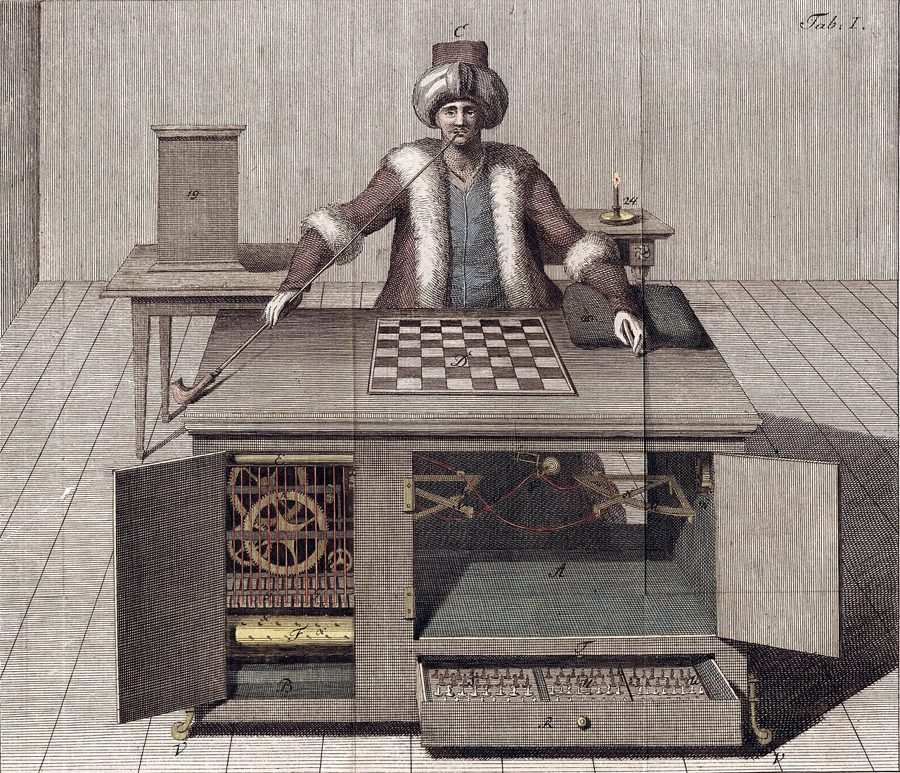
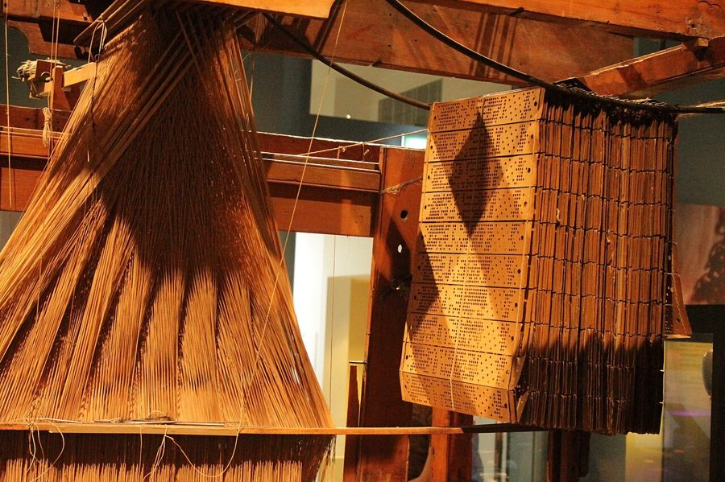
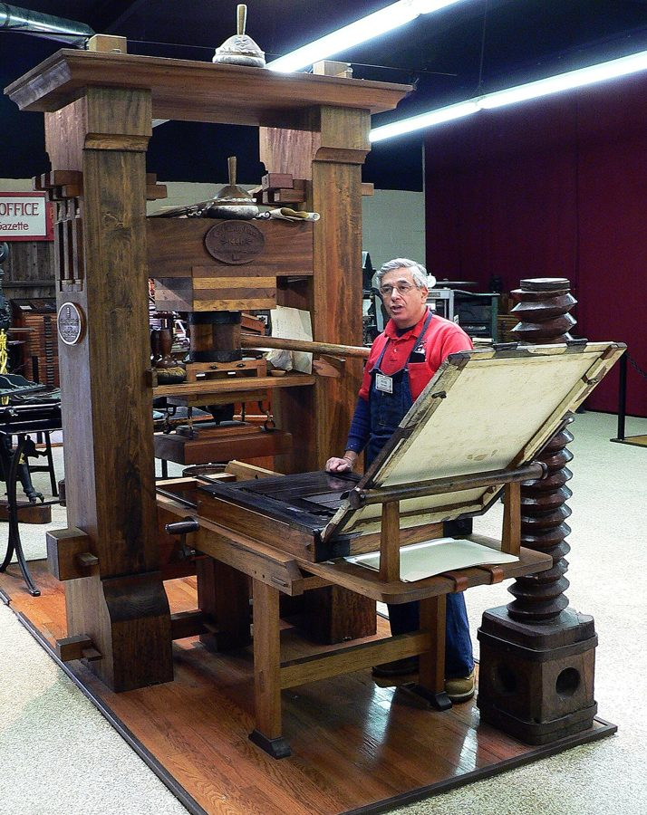
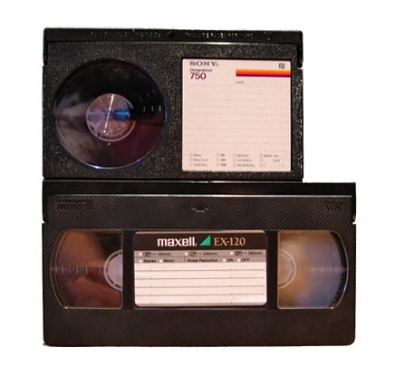

这一章在做什么
引言不讲故事，讲方法。作者交代三样东西：一个视角（让灯泡、镜片这些东西自己来写历史）、一个核心概念（蜂鸟效应：一处的创新在不相干的地方引出变化）、一个立场（只讲变化怎么来的，不评好坏）。
后面六章都是这个概念的例子。读的时候抓住三个词：robot historian 、hummingbird effect 、long zoom 。
悬停取蜜的蜂鸟。鸟类里很少有能这样停在半空的。书名里没有蜂鸟，但全书的核心概念以它命名。
Bob Brown / USFWS Mountain-Prairie，CC BY 2.0，维基共享资源
蜂鸟效应是什么，和蝴蝶效应差在哪
蜂鸟效应（生物里的原型）：每一环都说得清
花长出花粉
昆虫来授粉
花再加码：花蜜
蜂鸟会悬停的翅膀
蜂鸟效应（技术史里）：同样说得清，只是事先想不到
印刷机
人人读书
发现远视
眼镜热卖
显微镜
看见细胞
蝴蝶效应：也许连着，但中间画不出来
蝴蝶扇一下翅膀
无数空气分子相互碰撞 ？ ？ ？
大洋上的飓风
区别不在「影响传得远」，而在这条链能不能一环一环讲明白。全书讲的都是讲得明白的那种。
本站示意图。引言里最容易读混的一处：作者特意把蜂鸟效应和蝴蝶效应分开。蝴蝶效应的链条无法追踪；蜂鸟效应的每一环都清楚可解，只是站在起点的人想不到终点。 作者在引言里列了蜂鸟效应的几种来路。先有个印象，后面各章会一一对上：
来路 引言里举的例子 在哪展开 能量或信息的流通量暴涨 互联网 贯穿全书 测量能力的突破 摆钟和工业革命的工厂城镇 第 5 章 新发明暴露出人的短板 印刷术和镜片 第 1 章 新工具推开自然的限制 空调和人口迁移 第 2 章 新工具变成人们想问题的比喻 钟表和「齿轮宇宙」 引言
背景：作者默认你知道的事
这本书是写给美国读者的，很多东西作者只提一个名字。引言里提名字最密，下面按出现的顺序补上。
德兰达和「机器人史学家」
曼努埃尔·德兰达（Manuel De Landa，1952 年生于墨西哥城）是在纽约活动的哲学家、实验电影人。作者提到的那本书是他 1991 年出版的《智能机器时代的战争》。
书的开头是一个思想实验：如果由人工智能来写人类史，它关心的不是帝王将相，而是自己的「祖先」是怎么一步步出现的。作者借的就是这个换主角的办法。
机器人会当成大事的两样东西

「土耳其行棋傀儡」（The Turk），1789 年的版画。
Joseph Racknitz，公有领域，维基共享资源 
雅卡尔织机，右边那串打了孔的卡片决定织出什么花纹。苏格兰国家博物馆。
Stephencdickson，CC BY-SA 4.0，维基共享资源
会下棋的自动机 ：1770 年在维也纳宫廷亮相的「土耳其人」，巡演了几十年，赢过不少名人。其实柜子里藏着一个真人棋手，所以书里说它是 pretended to play chess 。
雅卡尔织机 （Jacquard loom，1804 年前后）：用一串打孔卡片控制织机提哪几根线。用卡片上的孔存「程序」这个主意，后来被早期计算机借走了。
协同进化，和达尔文的兰花书
协同进化（coevolution）：两个物种互为对方的环境，一方变了，另一方跟着变，像两个互相调用、一起迭代的模块。花和传粉昆虫是教科书例子。
达尔文在《物种起源》（1859）之后，1862 年专门出了一本讲兰花怎样靠昆虫传粉的书，作者提这件事是想说：达尔文自己很看重这种「互相成全」的进化，进化并不只是你死我活。
古腾堡的印刷机

古腾堡式木制印刷机的复制品，美国国际印刷博物馆。
International Printing Museum，CC BY 2.0，维基共享资源 约翰内斯·古腾堡（Johannes Gutenberg）1450 年前后在德国美因茨做出了欧洲第一套实用的金属活字印刷设备。书便宜了，识字读书的人成倍增加。
作者拿它当全书第一个蜂鸟效应的起点，第 1 章会展开讲。
蝴蝶效应
出自气象学家爱德华·洛伦茨（Edward Lorenz）。他在 1960 年代发现，天气模型的初始数值只差一点点，算出来的结果就天差地别；1972 年他有一场演讲，题目问的是巴西一只蝴蝶扇翅膀会不会在得克萨斯引起龙卷风。
这是混沌理论（chaos theory）最出名的比喻，重点是不可预测 。
1956 年的《联邦援助公路法》
艾森豪威尔总统签署的法案，联邦出大头的钱，修了今天美国的州际高速公路网（Interstate）。作者用它当「有人拍板决定」的那类变化的例子，来和「没人计划、自己长出来」的蜂鸟效应对照。
VHS 和 Betamax

上：Betamax 录像带；下：VHS 录像带。
Senor k，公有领域，维基共享资源 1970 年代家用录像带的两种格式。索尼的 Betamax（1975）一般认为画质更好，JVC 的 VHS（1976）录得更久、厂商更多，最后赢了。
在英语里，「VHS 打败 Betamax」是「差一点的技术赢了市场」的固定典故，作者提它是为了说这种事属于例外。
谷歌、Craigslist 和地方报纸
美国地方报纸的收入大头不是卖报，而是广告，尤其是租房、招聘、二手车这类分类小广告。Craigslist 是 1990 年代中期出现的免费分类信息网站，谷歌则把广告挂到搜索结果旁边，两边一夹，报纸的广告收入塌了。
书里说谷歌搜索 1999 年推出；谷歌公司成立于 1998 年 9 月。
纽伦堡集会
Nuremberg rallies：纳粹党 1920 年代到 1938 年在纽伦堡举行的党代会，后期每次有几十万人参加，希特勒通过扩音设备向全场讲话。
作者把它和爵士乐并排，是在说同一项技术（真空管放大）两头都通。第 3 章会细讲。
费曼和那朵花
理查德·费曼，1959 年。
作者不详，公有领域，维基共享资源 理查德·费曼（Richard Feynman，1918–1988），美国物理学家，1965 年诺贝尔物理学奖得主。引言末尾那一大段引文出自 1981 年 BBC 对他的电视访谈《发现的乐趣》，是口语实录，所以句子松散、有重复。
作者引它，是给自己的写法找一个类比：懂得多，不会让东西变乏味。
长焦：一次看好几个尺度
原子 声波、耳膜 一个发明家 城市、国家 全球气候
小 大
传统的讲法：停在人和国家这一段
长焦历史（long zoom）：这些尺度同时看
尺度
本站示意图。long zoom 是作者自己造的词：像变焦镜头从特写一路拉到广角。后面每一章都会在原子、个人、社会之间来回切，切的时候别以为跑题了。 词与短语
词条按在书里出现的顺序排。斜体小字是它所在的那句话里的几个词，方便你在书里找到。
technically speaking
… was, technically speaking, a history …
严格说来，按分类算
不是「从技术上讲」。意思是名义上归这一类，实际并不像。后面常跟 but。
post-structuralist
… French post-structuralist philosophy into histories …
后结构主义的
1960 年代起的一派法国哲学（福柯、德勒兹等）。这里只需知道：它和军事技术史八竿子打不着，所以这本书显得怪。
sui generis
… that seemed completely sui generis …
自成一类，独一无二
拉丁语，字面是「属于它自己的种类」。书面语，读作 /ˌsuːaɪ ˈdʒenərɪs/。
twist
… with a brilliant interpretative twist …
出人意料的一招；巧妙的转折
本义是拧、扭。讲故事、讲道理时的 twist 是「没想到还能这么来」。plot twist 是剧情反转。
loom large
… Events that loom large in human …
显得分量很重，占据显著位置
loom 作动词是「（庞大的东西）隐隐逼近」，和后面的 Jacquard loom（织机）是同形的两个词。
footnote
… would be footnotes from the robot’s …
不值一提的小事
字面是脚注。说某事是历史的 footnote，就是它只配在页脚提一句。
automaton
… the toy automatons that pretended …
自动机，机械人偶
靠发条和齿轮自己动的装置。计算机理论里的「自动机」也是这个词。
watershed moment
… would be watershed moments to …
分水岭，转折点
watershed 本义是分水岭。和下半句的 turning points 是同义复述。
contraption
… motors and other physical contraptions …
（样子古怪的）机械装置
带一点「奇巧玩意儿」的口气。这句在德兰达的引文里。
cogs and wheels
… similar system of cogs and wheels …
齿轮和轮子
cog 是齿轮的齿，也指小齿轮。说人是 a cog in the machine 就是「螺丝钉」。这个短语第 9 段还会再出现。
alas
… robots in this book, alas …
可惜，唉
古雅的感叹词，现在多半是带点玩笑的用法。
be bound up in
… past was bound up in the …
和……紧紧缠在一起
bound 是 bind（捆）的过去分词，不是「跳跃」也不是「边界」。
take for granted
… world we generally take for granted …
习以为常，觉得理所当然
全书的高频短语：这本书的用意就是让你别再 take 这些东西 for granted。
with fresh eyes
… for granted with fresh eyes …
用新的眼光
句子主干是 see a world … with fresh eyes，中间的定语从句把它们隔开了。
tap
… drink water from a tap and …
水龙头
熟词生义。tap water 是自来水。美式英语更常说 faucet。
enchanted with
… that are enchanted with the ideas …
被注入了（像被施了魔法）
enchant 是施魔法。这里是比喻：日用品里凝结着前人的点子。第 14 段的 enchanted objects 是同一个比喻。
hack away at
… who steadily hacked away at the …
一下一下地啃（难题）
hack 的本义是用斧子乱砍，away 表示持续不停。不是「黑客入侵」。
without a second thought
… luxuries today without a second thought …
想都不想
second thought 是「再想一下」。on second thought 是「转念一想」。
every bit as much as
… people every bit as much as …
丝毫不比……少
every bit as … as 是加强版的 as … as。后面的 if not more than 再加一码：甚至更多。
magnate
… kings and conquerors and magnates …
巨头，大亨
别和 magnet（磁铁）看混。
set in motion
… these innovations have set in motion …
引发，启动
宾语 a much wider array of changes 太长，被挪到了后面。全书讲因果时最爱用的短语之一，还有 trigger、end up -ing。
inadvertently
… the pollen and, inadvertently, fertilize other …
无意中，不经意地
昆虫只想吃花粉，顺带帮花传了粉。这个「顺带」就是蜂鸟效应的味道。
lure
… energy-rich nectar to lure the insects …
引诱
nectar 是花蜜。
survival of the fittest
… kind of survival of the fittest …
适者生存
作者在玩 fit 的两个意思：fittest 是「最适应的」，句末的 fit well with each other 是「彼此合得上」。
watered-down
… hear in watered-down versions of Darwinism …
简化到走样的
字面是掺了水的。指通俗说法里那种只剩「弱肉强食」的达尔文主义。
symbiotic
… but something more symbiotic: the …
共生的，互利的
名词 symbiosis 在下一段开头就出现。
be not lost on
… this relationship was not lost on …
没有逃过（某人的）注意
X is lost on Y 是 Y 没领会 X。这里是否定：达尔文看得很清楚。
hover
… enables them to hover alongside the …
悬停
网页里鼠标的 hover 也是这个词。
come close to
… few birds can even come close …
接近做到，差不多能做到
不是空间上的靠近。can’t even come close 是「差得远」。
Had there been
… Had there been naturalists around to …
假如当时有……
省略 if 的倒装虚拟句，等于 If there had been 。书面语常见，句首看到 Had / Were / Should 开头又不是问句，就是它。
avian
… nothing to do with avian life …
鸟类的
「禽流感」是 avian flu。
precipitate
… And yet it ended up precipitating …
促成，使突然发生
化学里是「沉淀」，气象里是「降水」，这里是书面语的「促成」。
spectacles
… market demand for spectacles encouraged a …
眼镜
单数 spectacle 是奇观、场面，复数才是眼镜（老式说法，现在说 glasses）。
farsighted
… suddenly realize that they were farsighted …
远视的（看近处模糊）
这里是眼科的意思，不是「有远见」。看书看不清，就是远视。
at first blush
… This may sound, at first blush …
乍一看，乍一听
blush 是脸红，这个习语里是古义「一瞥」。和 at first glance 同义，作者两个都用。
brew
… the storm system brewing in the …
酝酿，正在形成
本义是酿酒、煮咖啡。A storm is brewing 是固定说法，也用来比喻麻烦将至。
be at work
… something very different is at work …
在起作用
主语是某种机制或力量时，at work 不是「在上班」。
physiognomy
… the hummingbird’s physiognomy in direct, intelligible …
外形，形体特征
本义是面相。intelligible 是「可以理解的」，是这一段的关键词：蜂鸟效应是讲得通的。
causal fingerprints
… leave behind less conspicuous causal fingerprints …
因果关系留下的痕迹
causal（因果的）别看成 casual（随意的）。conspicuous 是显眼的。
liability
… creates a liability or weakness in …
短板，不利因素
不是法律上的「责任」。和 asset（长处）相对。
hotspot
… humans to colonize the hotspots of …
炎热的地方
平时指「热点」，作者故意按字面用：真的很热的地方。colonize 这里是大批迁入定居。
human agency
… direct result of human agency and …
人的主动作为
agency 在这里不是机构、代理，是哲学和社会学用语：主动行事的能力。
come about
… Sometimes change comes about through the …
发生，产生
不及物。同一句后面的 bring about 是及物版：使……发生。
have a life of their own
… to have a life of their own …
自己有了生命，不再受人控制
这半句就是「蜂鸟效应不是谁计划的」的另一种说法。
engender
… of their own, engendering changes in …
引起，催生
书面语。和 gender 同源，本义是「生出」。
set about
… when they set about to cool …
着手，动手去做
更常见的搭配是 set about doing 。
settlement patterns
… changes in American settlement patterns, which …
人口的居住分布
settlement 这里是定居，不是结算、和解。
mixed consequences
… in the end, mixed consequences as …
有好有坏的后果
mixed 修饰结果、评价、感受时都是「好坏参半」：mixed reviews 、mixed feelings 。这句是双重否定，绕一下：发生了不等于没有坏处。
the exception that proves the rule
… the exceptions that prove the rule …
恰恰说明规律存在的例外
固定习语。意思是：这种事少到值得单独拿出来说，正说明通常不是这样。
before long
… over Betamax, before long we have …
不久之后
不是「很久以前」（那是 long before）。
arc of history
… look at the arc of history …
历史的大走向
arc 是弧线。美国人熟悉这个说法，是因为马丁·路德·金常引的一句话：道德宇宙的弧线很长，但它弯向正义。
externality
… lies with the externalities and unintended …
外部性
经济学术语：一桩交易给局外人带来的成本或好处，比如工厂排污。
momentous
… it was a momentous improvement over …
重大的
别和 momentary（短暂的）混。
hollow out
… had hollowed out the advertising base …
掏空
外壳还在，里面空了。常用来说产业、城镇、中产阶级。
see that coming
… Almost no one saw that coming …
预料到
口语化的说法。I didn’t see that coming 是「真没想到」。
as it happens
… the argument—as it happens, I would …
碰巧，说起来
插入语。作者在两个破折号之间顺口表了个态：我恰好就是这么认为的。
there is a case to be made
… there is a case to be made …
这种说法也讲得通
case 这里是「论据、理由」。make the case that … 是论证……。作者用它引出自己不持的那一方观点。
all told
… advertising has been, all told, a …
全部算下来，总的来说
told 在这里是古义「计数」，银行的 teller（出纳）同源。
resolutely agnostic
… This book is resolutely agnostic on …
坚决不表态
agnostic 本义是不可知论者，引申为「不站队」。程序员熟悉的 platform-agnostic （不挑平台）是同一个引申。
take root
… after each innovation takes root …
扎根，站稳脚跟
strain
… to decide which strains to encourage …
品系，这里指创新的各个分支
不是「压力、拉伤」。生物学里指菌株、品系，作者还在延续进化的比喻。
spell out
… tried to spell out the full …
讲清楚，一条条说明白
字面是把单词一个字母一个字母拼出来。
better off
… Are we ultimately better off thanks …
境况更好
well off 的比较级。反义是 worse off 。
not have a lot of patience for
… a lot of patience for borders …
不怎么把……当回事
拟人说法：创新懒得理会国界。
never more so than
… national identities, never more so than …
从来没有比……更是如此
so 指代前面那句话。整句：创新不认国界，今天尤其这样。
expansive
… other respects as expansive as possible …
范围宽广的
不是 expensive。来自 expand。
do justice to
… that can do justice to all …
不辜负，恰如其分地对待
和司法无关。The photo doesn’t do it justice ：照片没拍出它的好。
in a similar vein
… and science in a similar vein …
以类似的思路
vein 本义是血管、矿脉，引申为「路数、风格」。
nutty
… think that he’s kind of nutty …
有点疯，不可理喻
这一整段是费曼的口语实录，kind of、I mean 这些都是口头禅，句子不必按语法细抠。
work one’s way toward
… working his or her way toward …
一步步走向，摸索着达到
动词 + one’s way 表示「靠这个动作一路前进」，如 fight one’s way 、talk one’s way out 。
subtract from
… doesn’t subtract from the traditional account …
减损
呼应费曼引文最后两句的 adds 和 subtracts。作者把费曼的话接过来收尾。
值得停下来的句子
the sexual reproduction strategies of plants end up shaping the design of a hummingbird’s wings.— 第 6 段，全书核心比喻的出处。本站译：植物的有性繁殖策略，最后塑造了蜂鸟翅膀的构造。
主语很长（the sexual reproduction strategies of plants ），谓语是 end up shaping 。end up doing 是这本书最要紧的一个句型：它不说「导致」，说的是「兜兜转转，最后竟然」。
往后每读到一个 end up，就是作者在提醒你：这一步没人计划过。
An innovation, or cluster of innovations, in one field ends up triggering changes that seem to belong to a different domain altogether.— 第 9 段，蜂鸟效应的定义。本站译：一个领域里的一项或一组创新，最后在一个看上去完全不相干的领域引发了变化。
拆开看：主语 An innovation … in one field ，中间插了 or cluster of innovations ；谓语又是 ends up triggering ；that 从句修饰 changes。
句末的 altogether 是「完全、根本」，修饰 different。这句就是全书的定义，值得背下来。
History happens on the level of atoms, the level of planetary climate change, and all the levels in between.— 第 15 段，「长焦历史」的主张。本站译：历史发生在原子的层面，发生在全球气候变化的层面，也发生在这两者之间的每一个层面。
句子不难，难的是当真。它解释了后面各章的写法：讲镜片要先讲二氧化硅的电子，讲空调要一路讲到美国总统选举。看到作者突然换尺度，回想这一句。
检查一下理解
先在心里答，再点开。答错的那题，回书里把对应段落再读一遍。
1. 在「机器人史学家」眼里，罗马帝国衰亡和打孔卡织机，哪个是大事？作者借这个视角想干什么？ 织机是大事，罗马衰亡只是脚注，因为机器人关心的是通向自己的那条线。作者并不写机器人，他借的是「换一个主角看历史」这个办法：让灯泡、镜片这些日用品当主角，看到的历史会和帝王将相版很不一样。
2. 蜂鸟效应是不是蝴蝶效应的另一个名字？ 不是，作者专门把两者分开。蝴蝶效应的因果链无法追踪、无法预测；蜂鸟效应的每一环都清楚、讲得通，只是跨了领域，事先没人会往那儿想。
3. 第 9 段说印刷术带来了一个「problem」，而且这个 problem 本身也是一种 invention。为什么 problem 要加引号？ 因为远视原本不成问题：不需要看小字的人感觉不到它。是读书这件新事把它变成了「问题」，所以说这个问题是被发明出来的。新问题又催生了新工具（镜片）。
4. 作者说这本书对价值问题 resolutely agnostic。这是说他认为创新没有好坏之分吗？ 不是。他明确说后果有好有坏，也说人需要一套价值标准去取舍。他的意思是：「变化怎么发生的」和「变化好不好」是两个问题，这本书只负责前一个，后一个留给读者按自己的信念去判断。
5. 书名里的 we 指谁？作者怎样为这个限定辩护？ 主要指北美和欧洲人。他承认换成中国或巴西会是另一个同样有意思的故事。辩护的理由是：科学方法、工业化这些关键经历先发生在欧洲，后来传遍了世界，这些日用品如今哪里都有。至于为什么先发生在欧洲，他说本书不回答。
6. 费曼那段话讲的是花，作者引它是想说什么？最后的 It only adds 是谁的话？ 费曼说，懂得花的细胞和进化，只会给花增添美感，不会减损。作者拿它类比自己的写法：从原子和社会的尺度讲发明，不会削弱伽利略这类天才故事，只是多了几层。It only adds 原是费曼的话，作者在最后一段借来作自己的结论。